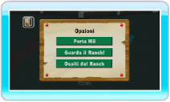
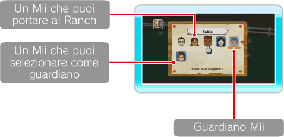
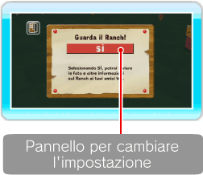

17 |
Opzioni |
 |

Qui puoi scegliere tra PORTA Mii, GUARDA IL RANCH! e OSPITI DEL RANCH. ● Porta Mii Puoi portare al Ranch i Mii creati nel Canale Mii della tua console Wii. Punta verso il Mii che vuoi portare al Ranch e premi Nota: un Mii contrassegnato da è un guardiano di Pokémon al Ranch e non può essere deselezionato. 

● Guarda il Ranch! Se selezioni SÌ, le foto e le informazioni sul Ranch verranno automaticamente inviate ai tuoi amici Wii tramite WiiConnect24 (vedi sezione Se vuoi cambiare questa impostazione, punta verso il pannello e premi Nota: devi avere almeno una foto nell’Album per usare questa funzione.
Gli inviti vengono inviati ai tuoi amici Wii quando esci dal gioco. Per invitare i tuoi amici Wii devi prima uscire dal gioco selezionando MENU Wii dal menu principale o dal menu HOME. ● Ospiti del Ranch Se scegli Sì, potresti ricevere al Ranch visite inaspettate attraverso WiiConnect24 (vedi sezione “23. Configura WiiConnect24”). Nota: puoi disattivare questa funzione in qualsiasi momento. |
 . Quando lo sfondo del Mii diventa blu, seleziona OK E TORNA AL RANCH in alto a sinistra.
. Quando lo sfondo del Mii diventa blu, seleziona OK E TORNA AL RANCH in alto a sinistra. |
 |
 |